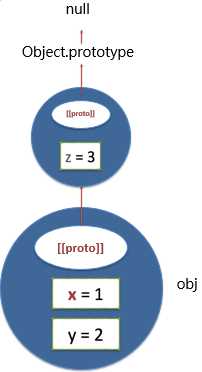
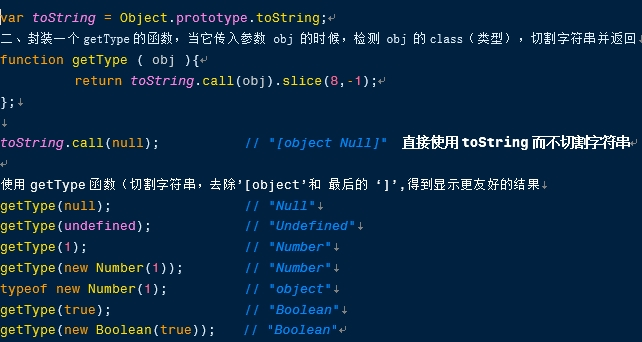
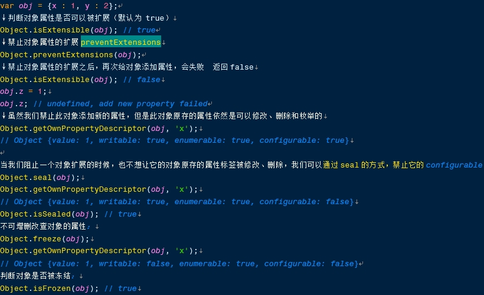

编辑于2018年4月|浏览:469
对象的标签
主要有三种：
[[proto]] —— 原型标签
[[class]] —— 类标签
[[extensible]] —— 可扩展性标签
①原型标签[[proto]]

②Class（类）标签
：表示这个对象是哪个类型但是class标签没有一个直接的方式去查看它或者修改它！我们可以间接的通过 prototype.toString 的方式去获取class！
一、首先将
Object.prototype.toString赋值为 toString，以便简化下边代码

③extensible标签
：表示对象上的属性是否可以扩展，是否可以被继续添加API:
Object.isExtensible(obj); 判断对象属性是否可以被扩展:
Object.preventExtensions(obj); 禁止对象属性的扩展
Object.seal(obj); 阻止一个对象扩展的同时，阻止它的对象原存的属性标签被修改、删除：
Object.freeze(obj); 冻结这个对象（不可增删改查）：
Object.isFrozen(obj); 判断是否被冻结：
↑上述方法只针对当前对象，不会影响原型链上的对象
如果想对原型链所有对象做类似处理可以通过 Object.prototypeof一些方法遍历他的原型链去 frozen，冻结所有
